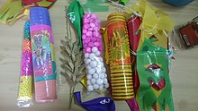
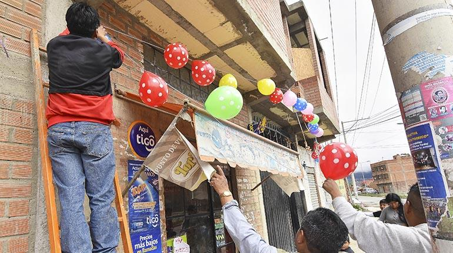
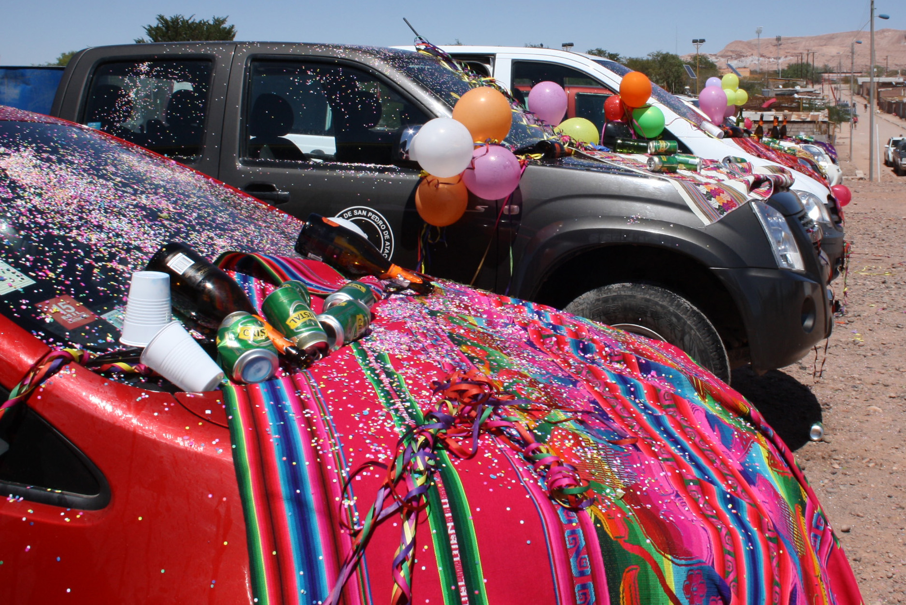
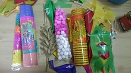
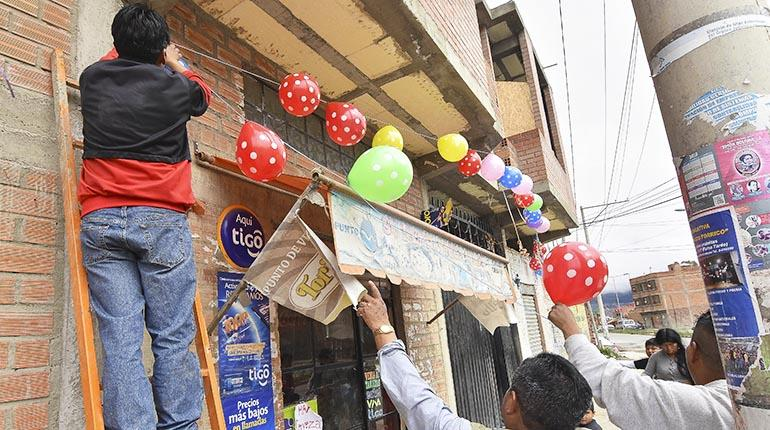
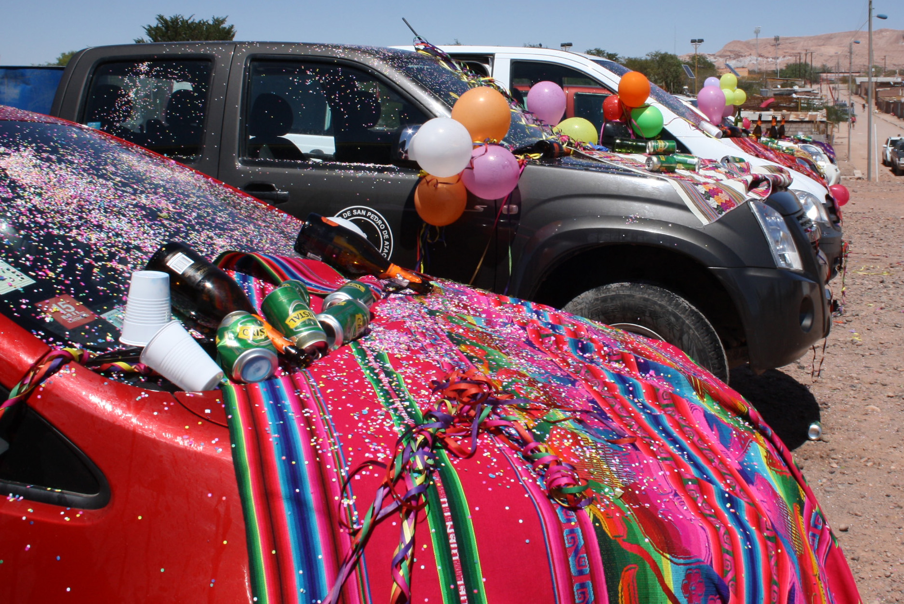

La challa es una ceremonia de reciprocidad con la Pachamama que se basa en el acto de regar la tierra u otro bien con alcohol y elementos simbólicos.
La challa en el campo consiste, básicamente, en cubrir la tierra con pétalos de flores y enterrar una olla de patatas cocidas, cigarros, hojas de coca y alcohol para alimentar a la Pachamama. Mientras lo hacen, beben y le ofrecen cantos y bailes.
En la ciudad se challa adornando una propiedad (casa, negocio, automóvil, etc.) con serpentinas de colores y rociando alcohol, granos dorados, pétalos de margaritas y confites en las esquinas de la misma.
Un elemento muy común en la challa es la mesa o apxata: un colorido altar donde se realizan ofrendas a la Pachamama. La apxata está cubierta por un aguayo y lleva frutas, caramelos, especias, cereales, confites, nueces, vino, alcohol, pétalos de flores, serpentinas, un feto de llama, etc.
Las ofrendas de la mesa deben ser quemadas y ahumadas, con maderas aromáticas de Koa y palo santo, para luego ser enterradas y entregadas a la Pachamama.
Tanto en la ciudad como en el campo es habitual que se utilicen petardos, durante la ceremonia, puesto que según las creencias del lugar el ruido sirve para alejar a los malos espíritus.
Agosto es el mes de challa en el campo, ya que en este período la tierra necesita fortalecerse, después del desgaste causado por el invierno y, entonces, “se abre” para recibir las ofrendas de los creyentes de la Pachamama. En la ciudad se challa en febrero o marzo, el martes de carnaval.
La comida es un elemento central en la challa, y cada región tiene un plato asignado para acompañar esta celebración. En Cochabamba se sirve el tradicional Chajchu, este plato está hecho a base de carne frita de cordero. En la ciudad de La Paz no puede faltar el popular Puchero del martes de challa, una sopa que contiene variedad de carnes, acompañadas con garbanzos, repollos, choclos, nabos, patatas, especias y una salsa picante de cebolla. En zonas rurales del altiplano se acostumbra comer el ancestral Aptapi, que consiste en una merienda común, donde cada comensal lleva su aporte: patatas, tuntas, chuños, carnes, choclos, habas, etc.
La challa se caracteriza por ser muy pintoresca, abundante en colores, objetos, cerveza y comida. Es un acontecimiento donde los asistentes comparten y derrochan alegría, al son de los ritmos del lugar, al mismo tiempo que veneran, piden, agradecen y nutren a la Pachamama.

 




